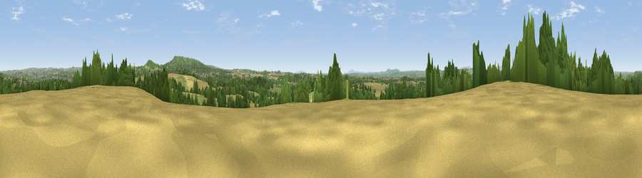

Iverley Hill
#15788 in England · top 24% of its area beats it · near ChurchillThe view, rendered

A 360° render of this exact spot computed from the terrain model, tree cover and land cover — summer colours, afternoon light, calibrated against photographs of famous viewpoints. Real trees, hedges and buildings will differ in detail.
The panorama
Grey silhouette: terrain skyline in each direction (720 bearings, Earth curvature and refraction included). Dashed green: skyline with trees (+15 m) and buildings (+8 m) as obstacles. Blue strip: how far the ground is visible on each bearing.
Where the view opens
Wedge length = distance to the farthest visible ground on that bearing (vegetation-aware). Rings at 10, 25 and 50 km.
What fills the view
35% grassland · 31% cropland · 25% woodland · 8% built-up
Angular shares of the visible panorama (visual magnitude), not map area. Landscape diversity 0.56 (0–1 Shannon).
Key numbers
More beautiful places nearby
The staircase of upgrades: each row has a higher view potential than everything closer. Driving times are estimates from straight-line distance, calibrated against real road routing — check an actual route before setting out.
| Place | Direction | Drive | Score |
|---|---|---|---|
| Wychbury Hill | E · 4 km | ~9 min | 68.0 |
| Viewpoint near Clent | ESE · 5 km | ~11 min | 74.3 |
| Viewpoint near Abberley | SW · 19 km | ~32 min | 77.5 |
| Viewpoint near Abberley | SW · 19 km | ~33 min | 78.1 |
| Abberley Hill | SW · 19 km | ~33 min | 80.4 |
| Viewpoint near Great Witley | SW · 22 km | ~36 min | 83.4 |
| Titterstone Clee | W · 29 km | ~46 min | 83.8 |
| The Wrekin | NW · 37 km | ~55 min | 85.0 |
52.43067, -2.17608 · source: osm peak · position refined by local search. Computed location — check access rights before visiting.